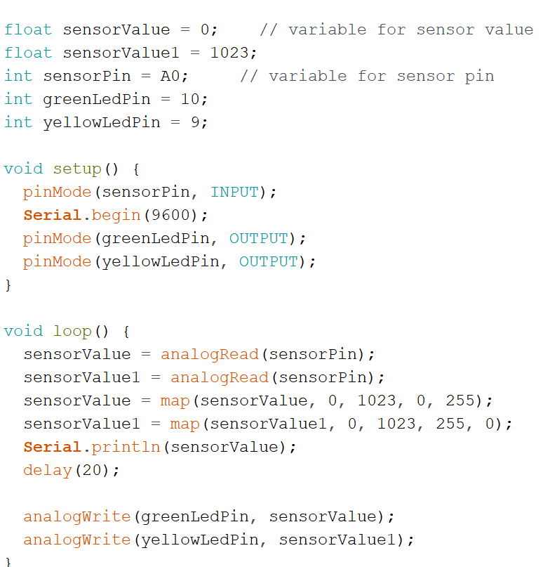

Jeroen
Opdracht 3c
Bij deze opdracht moesten we voor het eerst echt naar de code gaan kijken en snappen wat er gebeurd. Er kwam een fout bij iedereen voor, en dat is dat ze om en om gingen knipperen. Dat kwam vooral omdat we nog niet doorhadden dat we met de delays moesten spelen en een hele reeks moesten maken ipv aan en uit x2. Dat ging niet goed. Misschien is dit wel een mogelijkheid, maar niet degene waar ik op gekomen was.
Opdracht 4c
Hier kwam de moeite vooral uit het werkend maken van de LED lampjes goed genoeg tegen elkaar in te laten faden. De code moest omgedraaid worden op een of andere manier. Dit was nog een heel avontuur maar uiteindelijk snapte ik hoe het werkte. Ik moest 1 statement maken waarin ik allebei de waardes gelijk omdraaide.
Opdracht 6c
Het duurde even voordat ik map snapte. Maar toen het klikte dacht ik “hey wat makkelijk!”. Voor dat moment dacht ik vooral: “wat een nachtmerrie!”. Arduino is niet echt voor mij weggelegd. Ik vind javascript leuk, maar ik vind fysiek bezig zijn niet zo leuk. En deze opdracht werkte de ene keer met exact dezelfde code wel, en toen thuis weer niet. En toen kwam ik erachter dat ik het licht dan weer opnieuw in moest stellen met die nummers om de juiste values te krijgen. Hoofdpijn.
Opdracht 7
Deze was erg lastig. Ik snapte niet goed welke nummers ik moest doen/gebruiken omdat de eerdere opdracht om het licht te “meten” met de serial monitor niet goed werkte: hij was constant te dof of te fel. Uiteindelijk kreeg ik een nummer suggestie die werkte toen ik ging spelen met gekke nummers invullen, go #team888.
Opdracht 8
Hoofdpijn. Als ik deze vraag alleen al lees krijg ik hoofdpijn. Ik was altijd al superslecht in alles wat natuurscheikunde was, en daarvoor ben ik dan maar ook voor cursus nederlands docent gegaan op de HHS. Gek genoeg noemen ze dit CMD, maar hey, tomayto tomahto. We moeten zoveel schrijven dat het onderhand hetzelfde is. Anyway, punt is, ik haat deze opdracht. Nu dat dat uit de weg is, ga ik naar mijn antwoord.
Wat ik vooral hieruit lees is dat we een formule moeten toepassen, dan lig ik al snel in de foetushouding. Dus ik probeerde het voor mijn brein simpeler te maken. 5 volt in, 2,5 uit want er zijn er 2. Dus gewoon 50% want 2 verdelingen. Maar dan gaat de opdracht stoer doen over verschillende sterktes van die resistors. Dan gaat het lastig worden.
Ik ga er hiervan uit dat allebei de lichtmeters in de eerste instantie hetzelfde nummer zouden meten. De resistors komen hierna pas. Omdat het ook in een serieschakeling zit. Mogelijk omdat er een extra device bij zit die de hele tijd aan het meten is kan er meer stroom voor de lampjes doorgevoerd worden als de delay op het meten/printen in de serial monitor groter is. Mogelijk wel dat als allebei niet gelijkmatig licht meten dat de lampjes slechts voor de helft lichtgeven of helemaal niet. De formule helpt hier niet enorm bij, omdat mijn versimpelde versie zegt dat als 50% hier doorheen gaat per lichtmeter dan klopt wat ik zeg. Dus wanneer de lichtsensoren niet hetzelfde meten krijgt de lamp maar 50% van de power per lichtsensor. Dus als ze allebei maar 50% meten geven de lampjes ook maar 50% licht omdat ze dan 25% power krijgen per sensor. Als de eerste uit staat en de 2e 50% aan krijgen de lampjes maar 25% power.
Test/uitvoering: Niet het ideale antwoord, maar ik kreeg het gewoon helemaal niet aan de praat. Ik probeerde dit met de oefening 7 hardware, maar ik begon hier mee in een andere ruimte. Misschien was de afstelling verkeerd, of was het gewoon weer een geval van jeroen vs hardware dat verkeerd af liep.
Oh en er zitten echt veel te veel nulletjes in. Die M er af en toe neerzetten is nodig, maar is het echt zo erg wanneer het volledige nummer opgeschreven wordt om gewoon wat puntjes voor leesbaarheid neer te zetten? Teveel gevraagd zeker.
Opdracht 9b
Een doorlopend thema al de hele arduino lang is: als ik code moet kopiëren dan wordt alles op 1 regel geplakt. Zwaar frustrerend. Dan zit ik 5 minuten lang alles op te breken, vergelijken met de pdf, en kijken waarom welke zin nou weer een comment geworden is. De foutmeldingen van arduino zijn overigens ook erg matig. De foutmeldingen wijzen vaak naar de compleet verkeerde zin.
Opdracht 10f
Dit was weer een gevalletje “ik heb het fysiek niet goed in elkaar gezet”. Maar uiteindelijk heb ik die knop laten werken. Ik heb hem een CAO aangeboden en redelijke vakantieuren, en toen wilde die wel voor mij werken. Zo zijn we toch allebei weer blij, en dan heeft de LED-naar-knop vakbond ook weer een win in hun boek staan.
De code was lekker straight forward, dus daar zaten niet echt veel problemen in, al denk ik dit natuurlijk wel wanneer ik het niet goed in elkaar zit. Dit gaat gepaard met “wtf is mijn arduino bord kapot ofzo”. Nee, ik ben gewoon niet zo capabel met het in elkaar zetten van knopjes, draadjes en snoertjes.
Opdracht 11b
Dik dansen. De code was niet al te goed te snappen, en hoewel het limiet volgens de opdracht iets van 160 of 180 was wilde ik hem een dikke #yolo geven en liet ik mijn dansende spinner naar 190 gaan.
Wild.
En, laten we eerlijk zijn, de uiteindelijke dans staat ook bijna gelijk aan dat van het zwanenmeer.
Opdracht 12b
Om een of andere reden duurde dit erg lang. Maar ik ben er uiteindelijk uitgekomen. Mogelijk had het te maken met dat ik lichtelijk de motivatie kwijtgeraakt was en ondertussen aan het netflixen was. Soms heeft mijn aandacht een niet bestaand moment. Desalniettemin ben ik hier, hij werkt, en ik ben blij. Uiteindelijk kwam ik erachter dat de code helemaal goed was, maar 1 kabel zat verkeerd. Zo heb je dat soms. Dus ik zat moeilijker te doen dan nodig, maar dat zal niet de eerste keer zijn.
Opdracht 13b
Muziek! Deze installatie was makkelijk in elkaar te zetten. Ik maakte een matige poging om “vader jacob” te maken. De eerste 3 tonen, zeker on point. Helaas de rest wat minder. Die andere 2 die volgen hebben ook gelijk mijn motivatie om arduino musici te worden vermoord. Hoewel mijn muzikale kunsten op het arduino bord nogal wat overlaten om verbetering in op te zoeken was de opdracht zelf erg makkelijk en duidelijk te snappen. Ik was alleen wel echt te lui om de comments na de delays aan te passen, die kloppen dus voor geen meter.
P.S. De sirene is echt kut. Heerlijk.